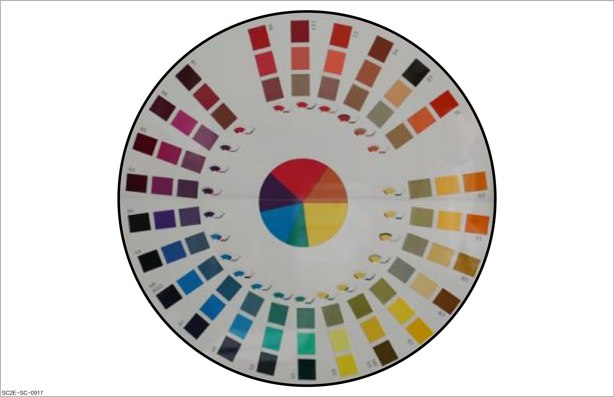
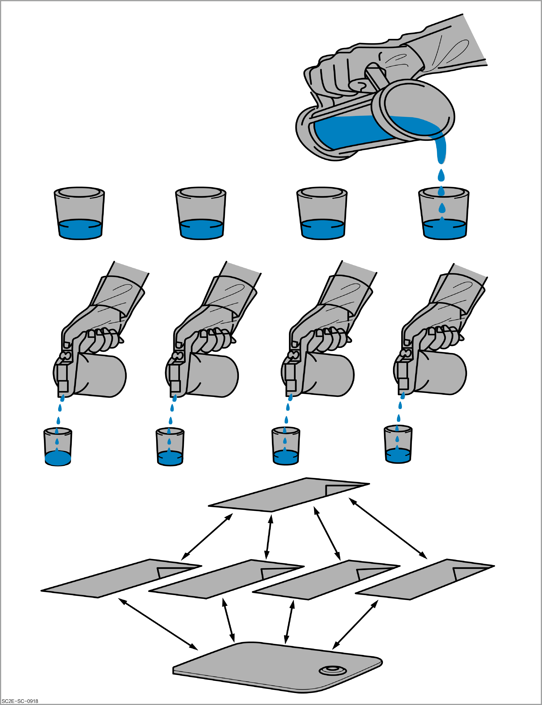

During the coloring process, it is necessary to identify and confirm the required colors in the paint. The following two methods are taken as examples to illustrate how to identify the required colors.
Analyze the missing color hue with the color masterbatch characteristic table to determine the missing color.
Analyze the trend of each color masterbatch in the color formula and determine the lacking color hue in the color plate.

|
Name of color masterbatch |
Color hue |
|---|---|
|
White |
Mainly used as the primary color in plain white, with excellent covering power. |
|
Mud yellow |
Used in plain color, aluminum color and iron oxide yellow. |
|
Lemon yellow |
The primary in plain yellow, appearing light yellow and slightly green. It can be added to the metal color to eliminate a small amount of red on the side. |
|
Black |
Used both in plain color and aluminum powder color, and as the primary in black (yellow-black). |
|
Blue |
Commonly used masterbatch for blue, appearing pure blue in both sides. |
A plurality of containers are placed so that the number of containers is the same as the number of color masterbatch in the paint.
Pour about 30 g of mixed paint (measured coloring paint) into the corresponding container.
Add one color masterbatch to each container at the proportion only 20% of the original mixing proportion.
Mix the above paint evenly with a paint mixing ruler and apply them to color test plates of different colors for color comparison.
Determine the color plate closest to the target color, so as to determine the type of color that should be added.
